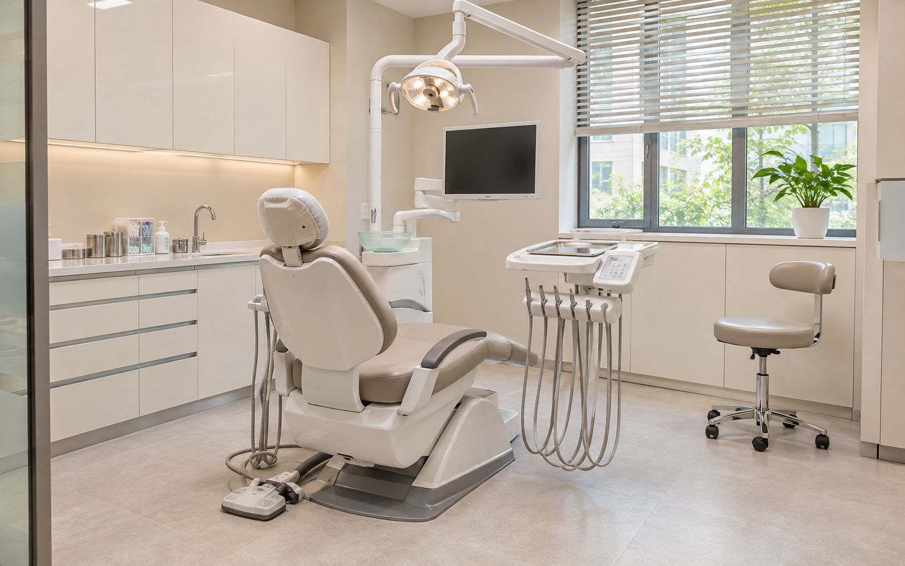

접수대·대기실
대기 의자 주변과 출입구, 접수대의 접근 가능한 일반 표면, 바닥과 걸레받이를 청소합니다. 접수 서류와 전자기기는 병원이 정한 취급 기준을 따릅니다.
치과는 접수·대기공간과 진료실의 이용 방식이 다릅니다. 원내케어는 유니트체어와 진료 장비의 배치를 확인하고, 환자와 의료진이 이동하는 일반 공간의 청소 범위와 작업시간을 협의합니다.
진료 장비와 일반 청소 구역을 나누고, 바닥과 가구 주변부터 관리합니다.

대기 의자 주변과 출입구, 접수대의 접근 가능한 일반 표면, 바닥과 걸레받이를 청소합니다. 접수 서류와 전자기기는 병원이 정한 취급 기준을 따릅니다.
유니트체어 사이의 이동 통로와 접근 가능한 바닥, 일반 가구 하부의 먼지를 정리합니다. 진료 중인 구역과 케이블이 놓인 곳은 담당자가 지정한 작업 경계를 따릅니다.
상담 테이블과 의자 주변, 일반 수납장 외부와 바닥을 협의된 범위에서 관리합니다. 진료기구 보관함과 재료가 놓인 구역은 임의로 정리하지 않습니다.
이동 통로와 출입구 바닥, 화장실의 세면대·거울·변기 외부 등 일반 공간을 관리합니다. 화장실용 청소도구는 다른 공간과 분리합니다.
유니트체어와 연결된 기구·호스·흡입장치·조작부, 기구 세척과 임상 장비 내부 관리는 기본 정기청소에 포함하지 않습니다. 장비를 옮기거나 분해하지 않고, 병원이 허용한 주변 바닥과 일반 가구 구역을 중심으로 작업합니다.
면적뿐 아니라 진료실별 사용 종료 시간과 청소 가능한 통로, 방문 횟수와 투입 인원, 실제 작업 범위를 함께 확인합니다. 정기청소와 별도 집중청소·대청소의 포함 여부를 구분해 견적을 협의합니다.
가능합니다. 진료 장비를 이동하거나 접촉하지 않고 작업할 수 있는 바닥과 이동 통로의 범위를 먼저 협의합니다.
진료기구 세척과 임상 장비 내부 관리는 일반 환경청소와 구분합니다. 의료폐기물 수거도 기본 서비스에 포함하지 않습니다.
진료 종료 시간, 건물 출입 조건과 실제 인력 배치 가능 여부를 확인해 방문 요일과 시간을 협의합니다.
기존 계약의 종료 조건과 불편사항을 정리한 뒤 새 작업 범위와 시작일을 협의합니다. 청소업체 교체 안내를 참고하세요.
서울·경기 병원·의원의 정기청소를 상담합니다. 병원 위치와 출입 조건, 희망 작업시간과 실제 인력 배치 가능 여부를 확인한 뒤 일정을 안내합니다.
공간 구성과 현재 불편한 구역, 희망 방문 주기를 알려주세요. 병원 운영 조건에 맞는 작업 범위와 시간을 함께 확인합니다.